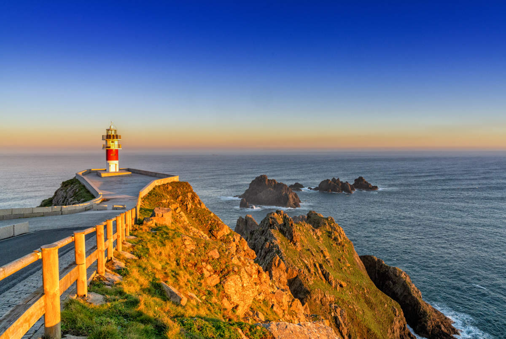
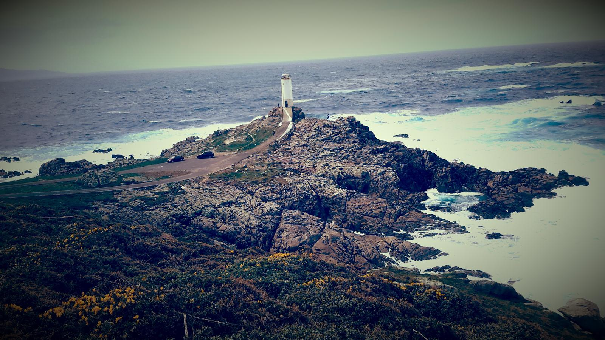
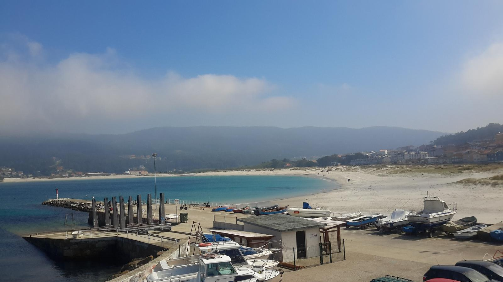
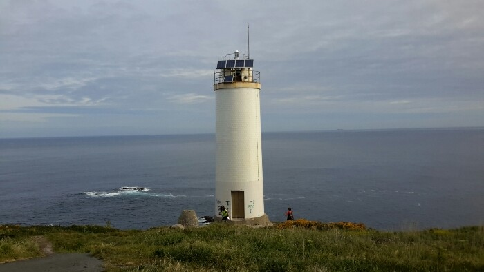
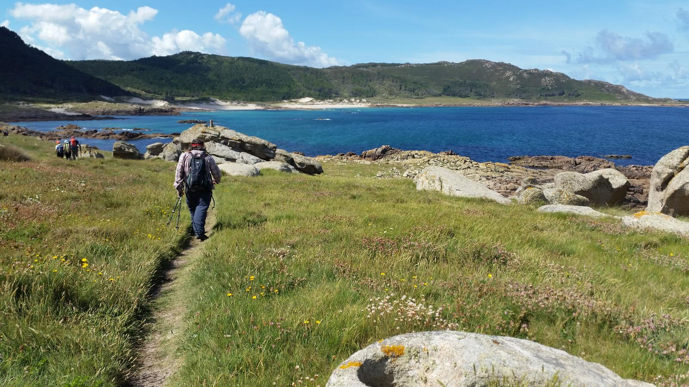
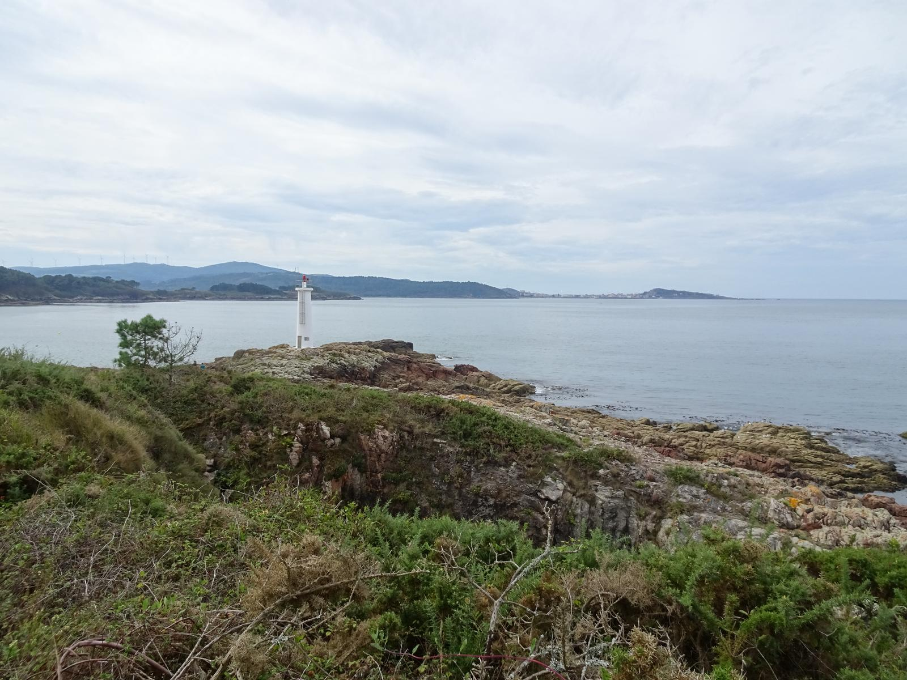
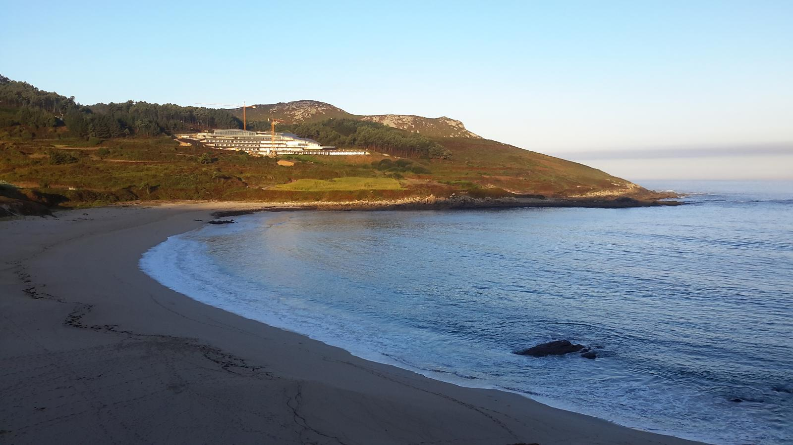
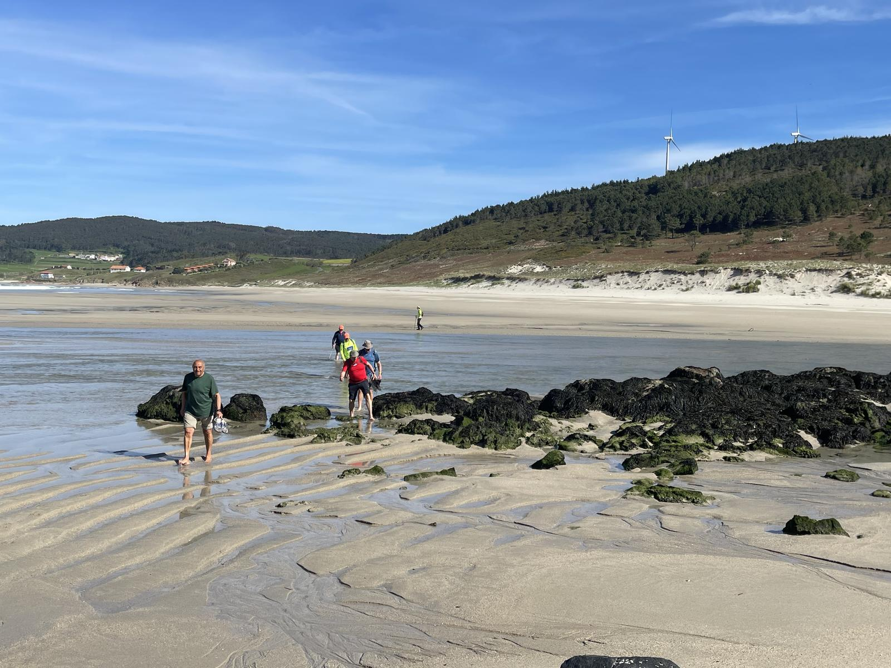

Las 8 Etapas del Camiño
Haz clic en cada etapa para desplegar la información, conocer la distancia y descubrir los secretos de la Costa da Morte.
Dificultad: Alta. La ruta comienza en el puerto de Malpica, ofreciendo vistas panorámicas de las Islas Sisargas. Tras recorrer senderos de pescadores y cruzar el río en Seiruga, afrontaremos la dura subida al mágico Faro de Punta Nariga. El tramo final, espectacular pero exigente, nos guiará entre acantilados hasta la Playa de Niñóns. ¡Aviso: asegúrate de terminar esta etapa de día!

Dificultad: Alta. Etapa espectacular pasando por el Faro do Roncudo (famoso por sus percebes) y terminando en el tranquilo estuario del Río Anllóns y las dunas de A Barra.

Dificultad: Media. Un recorrido que combina la magia del interior del estuario del Anllóns, los dólmenes antiguos y la impresionante llegada al Faro de Laxe.

Dificultad: Baja. La etapa más corta e ideal para recuperar fuerzas. Pasamos por la famosa Praia de los Cristales y terminamos en el pintoresco pueblo de Arou.

Dificultad: Media. El corazón de la Costa da Morte. Caminarás por el tramo más salvaje, visitando el Cementerio de los Ingleses y llegando al majestuoso Faro Vilán.

Dificultad: Alta. La etapa más larga del camino. Rodea toda la ría para llegar a la mágica Punta de la Barca en Muxía, donde las olas rompen con una fuerza increíble.

Dificultad: Media. Se abandona el interior de la ría y se vuelve al océano abierto. Recorre el imponente Cabo Touriñán (el punto más occidental de la España peninsular) hasta la playa surfera de Nemiña.

Dificultad: Alta. El gran final. Un recorrido exigente con desniveles que culmina en el mítico Faro de Finisterre, el fin del mundo antiguo, viendo la puesta de sol sobre el Atlántico.
